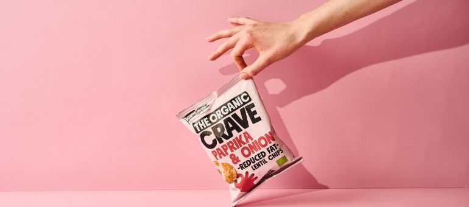
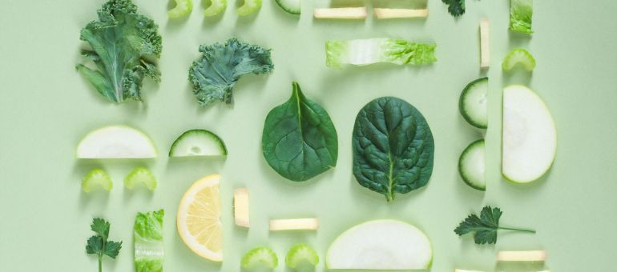

Nutrición
¿Cómo evitar el aumento de peso?
La nutrición es un factor clave para mantener una buena salud y un peso adecuado, especialmente para las mujeres. En muchas ocasiones, la falta de información y la rutina diaria pueden hacer que se tomen malas decisiones alimentarias, lo que puede llevar a un aumento de peso y a problemas de salud. Por ello, es importante conocer cuáles son los principales consejos de nutrición para evitar estos problemas.
Una alimentación saludable debe incluir alimentos de todos los grupos alimenticios, como proteínas, carbohidratos, grasas saludables, vitaminas y minerales. Para mantener un peso adecuado, es importante controlar el tamaño de las porciones y evitar los alimentos procesados y altos en calorías. Se recomienda comer no más de un plato y medio de comida en los almuerzos y cenas. A continuación te dejamos algunas sugerencias de alimentos bajos en grasa y con muchos nutrientes para tu día a día.
Desayuno
• Avena
• Yogurures
• Huevos
• Frutas frescas (fresas, arándanos, bananas, kiwi, etc.)
• Pan integral tostado con aguacate o queso fresco
• Batidos de frutas y verduras
Almuerzo
• Ensaladas de vegetales variados con pollo o pescado
• Sándwiches de pan integral con aguacate, lechuga, tomate, queso fresco y/o hamburguesa
• Burritos de frijoles negros con arroz integral, aguacate, verduras y salsa de tomate casera
• Sopa de vegetales con quinoa y pollo desmenuzado
• Tortillas integrales con aguacate, espinacas frescas, y queso fresco bajo en grasa
Merienda
• Frutas frescas o frutas secas (nueces, almendras, arándanos, manzanas, bananas, etc.)
• Batidos de frutas y verduras (licuado completo)
• Yogur griego con cereales o avena
• Palitos de zanahoria y hummus casero
• Barritas de granola caseras
• Tostadas
Cena
• Pescado a la parrilla con verduras asadas y arroz integral
• Pollo a la parrilla con ensalada
• Curry de verduras con arroz integral
• Chili vegetariano con tortillas de trigo integral
• Ensalada de quinoa con aguacate, tomate, pepino, y espinacas
Recuerda que para mantener una dieta saludable, es importante limitar la ingesta de alimentos procesados y altos en grasas saturadas y azúcares añadidos. Además, beber suficiente agua y hacer actividad física regularmente también son factores importantes para mantener un estilo de vida saludable. Se recomienda beber por lo menos 8 vasos de agua por día para conseguir una hidratación adecuada, además, mejora la atención y regula en cierta medida el apetito.

Nutrición
¿Cómo combatir los antojos de comida?
Los antojos de comida pueden ser un problema para muchas personas, especialmente cuando están tratando de seguir una dieta saludable. Es difícil resistir el impulso de comer algo sabroso y satisfactorio, incluso si sabes que no es lo mejor para ti. Sin embargo, hay varias estrategias que puedes utilizar para combatir los antojos de comida y mantener tus hábitos alimenticios saludables.
Entender los antojos de comida
El primer paso para combatir los antojos de comida es entender de dónde provienen. A menudo, los antojos de comida son el resultado de factores emocionales, como el estrés, la ansiedad o el aburrimiento. También pueden ser causados por factores físicos, como la falta de sueño o la deshidratación. Identificar la causa subyacente de tus antojos de comida puede ayudarte a tomar medidas específicas para combatirlos.
Planificación de las comidas
Una de las mejores maneras de combatir los antojos de comida es planificar tus comidas con anticipación. Cuando planificas tus comidas, puedes asegurarte de que estás comiendo suficientes nutrientes para mantenerte satisfecho durante todo el día. También puedes incluir alimentos ricos en fibra y proteínas para ayudarte a sentirte lleno por más tiempo. Además, planificar tus comidas te ayuda a evitar el impulso de comprar alimentos poco saludables en la tienda de comestibles o en la máquina expendedora.
Comer regularmente
Comer regularmente es otra forma importante de combatir los antojos de comida. Cuando pasas largos períodos de tiempo sin comer, tu cuerpo puede comenzar a producir más grelina, una hormona que aumenta el apetito. Esto puede llevar a antojos de comida poco saludable. En su lugar, intenta comer pequeñas comidas frecuentes durante todo el día para mantener tus niveles de energía y evitar los antojos de comida.
Beber agua
Beber suficiente agua es esencial para mantenerse hidratado y evitar los antojos de comida. A veces, los antojos de comida pueden ser una señal de que tu cuerpo está deshidratado. En lugar de recurrir a alimentos poco saludables, trata de beber un vaso de agua y esperar unos minutos para ver si el antojo desaparece. Además, beber agua antes de las comidas puede ayudarte a sentirte más lleno y evitar que comas en exceso.
Comer alimentos saludables y satifactorios
Cuando se trata de combatir los antojos de comida, comer alimentos saludables y satisfactorios es clave. Los alimentos ricos en fibra y proteínas pueden ayudarte a sentirte lleno por más tiempo, lo que puede ayudarte a resistir los antojos de comida. Además, los alimentos ricos en nutrientes pueden ayudarte a sentirte más satisfecho y evitar el impulso de comer alimentos poco saludables.
Conclusiones
Los antojos de comida pueden ser difíciles de resistir, pero hay muchas estrategias que puedes utilizar para combatirlos. Entender los antojos de comida y abordar la causa subyacente puede ayudarte a tomar medidas específicas para evitarlos.

Nutrición
¿Cómo tener una dieta balanceada si sigues una dieta vegana o vegetariana?
Seguir una dieta vegana o vegetariana puede ser una opción saludable y ética, pero también puede ser desafiante asegurarse de obtener todos los nutrientes esenciales para mantener una dieta balanceada. Es importante entender los nutrientes que podrían faltar en una dieta vegana o vegetariana y cómo se pueden reemplazar para garantizar una dieta completa y balanceada.
Proteínas
Las proteínas son esenciales para construir y reparar tejidos, y también son importantes para mantener un sistema inmunológico saludable. La proteína se encuentra comúnmente en la carne, pero también se puede obtener de fuentes vegetarianas y veganas como frijoles, legumbres, soja, nueces y semillas. Es importante consumir una variedad de fuentes de proteína para garantizar que se obtengan todos los aminoácidos esenciales necesarios para una buena salud.
Hierro
El hierro es esencial para producir glóbulos rojos y prevenir la anemia. Se puede obtener hierro de fuentes vegetales como lentejas, espinacas, garbanzos y tofu. Es importante consumir alimentos ricos en hierro con alimentos ricos en vitamina C, como tomates, pimientos y cítricos, ya que la vitamina C ayuda a la absorción de hierro.
Calcio
El calcio es esencial para mantener huesos y dientes fuertes. Se puede obtener calcio de fuentes vegetales como espinacas, brócoli, tofu y leches vegetales fortificadas. Además, se pueden consumir suplementos de calcio para garantizar que se esté obteniendo suficiente cantidad.
Vitamina B12
La vitamina B12 es esencial para la salud del cerebro y el sistema nervioso, pero solo se encuentra naturalmente en productos animales. Las personas que siguen una dieta vegana o vegetariana deben consumir alimentos fortificados con vitamina B12 o tomar suplementos para asegurarse de obtener suficiente cantidad.
Ácidos grasos Omega-3
Los ácidos grasos Omega-3 son esenciales para la salud del cerebro y el corazón, y se encuentran comúnmente en pescados grasos. Las personas que siguen una dieta vegana o vegetariana pueden obtener Omega-3 de fuentes vegetales como semillas de chía, nueces y aceites de semillas.
Planificación de comidas
Para asegurarse de obtener todos los nutrientes esenciales, es importante planificar las comidas cuidadosamente. Es recomendable incluir una variedad de alimentos de diferentes grupos de alimentos, como verduras, frutas, legumbres, granos integrales y proteínas vegetales. Además, se pueden incluir suplementos como vitamina B12 y calcio para garantizar que se esté obteniendo suficiente cantidad.
Conclusión
Seguir una dieta vegana o vegetariana puede ser saludable y ético, pero es importante asegurarse de obtener todos los nutrientes esenciales para mantener una dieta balanceada. Al incluir una variedad de fuentes de proteínas, hierro, calcio, vitamina B12 y ácidos grasos Omega-3, y planificar cuidadosamente las comidas, es posible obtener todos los nutrientes necesarios para mantener una buena salud.

Nutrición
Alimentos para mejorar el rendimiento deportivo de las mujeres.
Para mejorar el rendimiento deportivo y aumentar la energía, las mujeres activas deben asegurarse de consumir suficientes proteínas, carbohidratos complejos, grasas saludables, vitaminas y minerales, agua y considerar el uso de suplementos bajo la supervisión de un profesional de la salud. Además, es importante recordar que la nutrición es solo una parte del éxito en el deporte, y que el entrenamiento, el descanso y la mentalidad también juegan un papel importante en el rendimiento deportivo.
Aquí hay algunos alimentos que pueden ayudar a aumentar la energía y mejorar el rendimiento deportivo de las mujeres.
Proteína
La proteína es esencial para la construcción y reparación muscular. Las mujeres activas deben consumir suficiente proteína para ayudar a reparar el tejido muscular después del ejercicio y mejorar el rendimiento. Las fuentes de proteínas incluyen carne magra, pescado, huevos, legumbres y productos lácteos.
Carbohidratos complejos
Los carbohidratos complejos son importantes para proporcionar energía sostenida durante el ejercicio. Las mujeres activas deben consumir suficientes carbohidratos complejos como cereales integrales, arroz integral, pasta integral, frutas y verduras.
Grasas saludables
Las grasas saludables proporcionan energía a largo plazo y son importantes para la absorción de vitaminas liposolubles. Las mujeres deben incluir grasas saludables en su dieta, como aguacates, nueces, semillas, aceite de oliva y pescado graso como el salmón.
Vitaminas y Minerales
Las vitaminas y minerales son esenciales para una buena salud y rendimiento deportivo. Las mujeres activas deben asegurarse de obtener suficientes vitaminas y minerales a través de una dieta equilibrada y variada, incluyendo frutas y verduras, carnes magras, productos lácteos y cereales integrales.
Agua
La hidratación adecuada es importante para mantener la energía y prevenir la deshidratación. Las mujeres activas deben beber suficiente agua antes, durante y después del ejercicio para mantenerse hidratadas.
Suplementos
Algunos suplementos pueden ayudar a aumentar la energía y mejorar el rendimiento deportivo de las mujeres. Por ejemplo, la creatina puede ayudar a aumentar la fuerza y la masa muscular, mientras que la cafeína puede mejorar el rendimiento durante el ejercicio de resistencia. Sin embargo, es importante recordar que los suplementos no deben reemplazar una dieta equilibrada y deben ser utilizados con precaución.